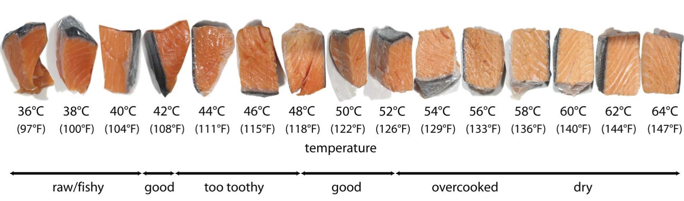
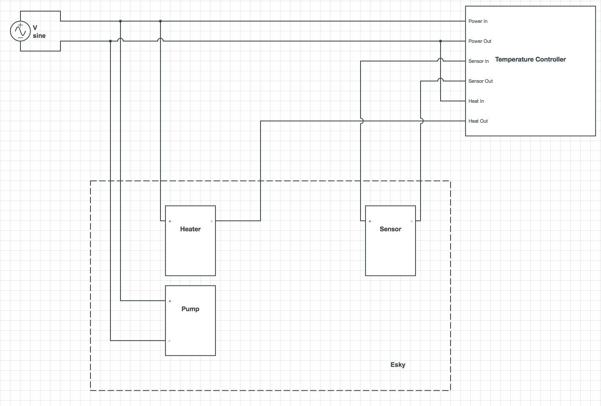

Sous Vide Machine
It's going to revolutionize home cooking in ways that the microwave didn't even dream of doing
- Heston Blumenthal
Sous-vide is a method of cooking in which food is sealed in airtight plastic bags then placed in a water bath or in a temperature-controlled steam environment for longer than normal cooking times (usually 1 to 6 hours, up to 48 or more in some select cases) at an accurately regulated temperature much lower than normally used for cooking, typically around 55 to 60 °C (131 to 140 °F) for meat and higher for vegetables. The intent is to cook the item evenly, ensuring that the inside is properly cooked without overcooking the outside, and retain moisture.
Wikipedia

What you need
All the required components and tools can be easily found online or at the closest hardware store. In Melbourne (Asutralia), Bunnings and Myer are selling everything you need except for the Temperature Controller.
- Water Boiler
- Water Pump
- Temperature Controller
- Temperature and Water resistent Sealant
- Esky
- Generals (drill, auto electrical cable, tape for electric components, screws, cable tighteners, power cable)
{kind=link}
{kind=link}
{kind=link}
{kind=link}
How to assemble it
I have added the layout that I have used for connecting the Temperature Controller and the other components: Pump, Heather and Sensor. The circuit is really simple and it can be easily reproduced but, if you have any issues, please do not hesitate to contact me.
{kind=link}

Here some pictures that illustrate the final machine with all the cabling.
{kind=link}
{kind=link}
{kind=link}
{kind=link}
{kind=link}
{kind=link}
{kind=link}
Contact Me
If you want to have more details regarding this project or you just want to get in touch with me please do not hesistate to send me an email (), add me on LinkedIn or check out my project Ocean Deep.